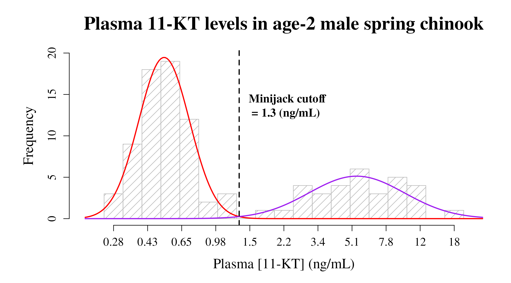
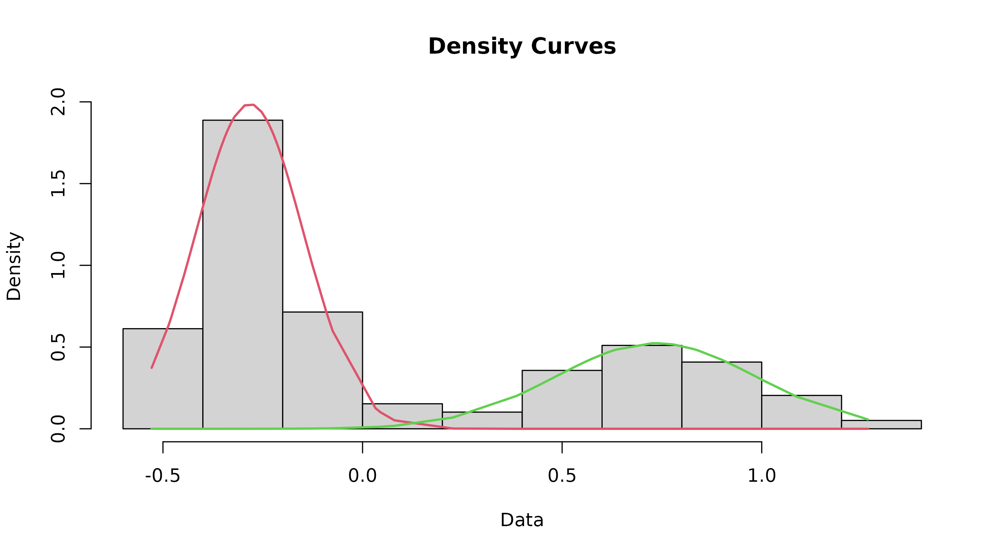
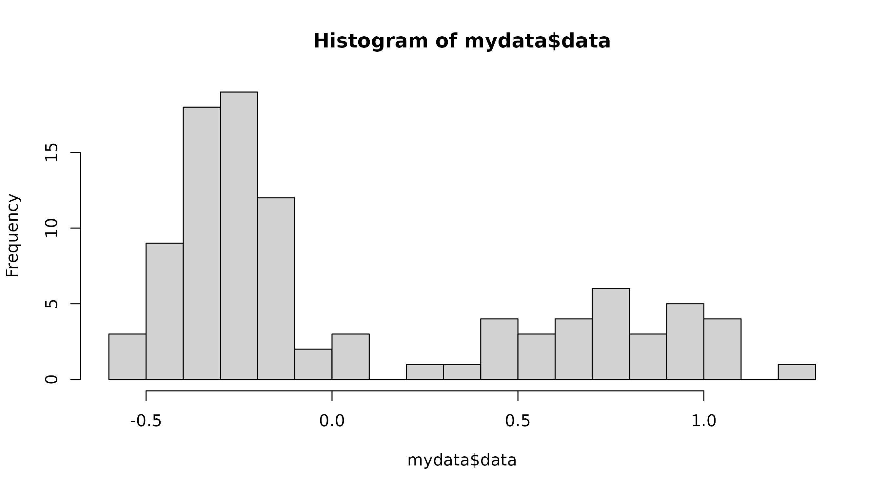

Help.Rmdcutoffvalue package
cutoffvalue is a simple R package that implements an
updated version of the method first developed and used in Medeiros et
al. (2018)1. It can be used to determine an objective
cutoff value between a significantly bimodal distribution of
log-transformed data and plot a representative graph of the results.
The functions in this packaged are written to utilize the example data set (an internal dataset object identified by “rawdata”) and will use it by default if the path for a dataset is not provided. The examples below specify this, along with any other default parameters for each function.
This vignette will go over the various functions included in
cutoffvalue using the included example data.
The overall goals of this package are to (1) determine a cutoff value
between the upper and lower modes of the dataset and (2) produce a ncie
graph of the results that includes a histogram of the data, the two
models fit to the upper and lower modes, and a line depicting the cutoff
value. The functions are written to be run independently, so that only
two functions need to be run to get the necessary information:
This vignette is written in accordance with the suggested workflow using these two functions. Subsequent sections discuss the functions that are included within them.
You can install the latest version of cutoffvalue from
GitHub
with:
# install.packages("devtools")
devtools::install_github("lea-medeiros/cutoffvalue", dependencies = TRUE, build_vignettes = TRUE)Import the data file to be used in the analyses and graph. The package includes a dataset for use as an example - this object is accessible as “rawdata” and will be used in the examples.
Import your dataset any way you prefer. However, keep in mind that data should be organized as a single column of log- or natural log-transformed data. I find that the easiest way to import data is to use the “Import Dataset” function built into R Studio, but you can also use code (an example is provided below).
library(readxl)
yourrawdata <- read_excel("/path/to/your/excel/data")Each function in this package uses the provided dataset (whether it’s
the example dataset or one you provided) and cleans it up to remove any
blank cells. It then provides a list of objects: the data
(mydata$data), the maximum value
(mydata$upper), and the minimum value
(mydata$lower), all of which are then used in subsequent
calculations.
modes function to determine modality
Evaluating an objective and valid cutoff value depends upon whether
the dataset is bimodal. Which means that the modality of the dataset
should be determined before proceeding. The null hypothesis of this test
is that the dataset is unimodal; an excess mass statistic associated
with a p-value of less than 0.05 implies it is more than unimodal. It is
strongly suggested that you run this test prior to any other function in
cutoffvalue; however, how you proceed depends on your
knowledge and understanding of the data.
The
modesfunction uses the example dataset (an internal dataset object identified by “rawdata”) by default. Thus, if the path for the dataset is not specified (e.g., running modes() in the console), this is the data that will be used.
When given a label (i.e., “modetest” in the example below), this function returns the Excess Mass statistic and associated p-value to the Environment.
Please keep in mind that the default parameters of
cutoffvalue assume a bimodal distribution - any other
modalities may cause inaccuracies in the results.
modetest <- modes(rawdata)
#> Modality Test Results
#>
#> P-value: 0.006
#> Excess Mass Statistic: 0.09845272
#> **Reject null hypothesis** Distribution contains more than one mode; proceed with analyses.
#>
#> Test Credit: Ameijeiras-Alonso et al. (2019) excess mass testThe modes() function returns the p-value and excess
mass statistic along with instructions on how to proceed based on the
p-value. If the p-value is less than 0.05, accept the alternative
hypothesis (data is at least bimodal) and proceed with analysis.
However, if the p-value is more than 0.05, the data is unimodal and the
following analyses are not entirely valid.
cutoffplot function to plot the final
graph
Plot a pretty graph that includes a histogram of the data, curve lines for each mode generated from the model results, the cutoff value depicted as a line, and labels customized for your dataset.
The
cutoffplotfunction uses the example dataset (an internal dataset object identified by “rawdata”) by default. Thus, if the path for the dataset is not specified (e.g., running cutoffplot() in the console), this is the data that will be used. Parameters (and their defaults) for the resulting graph are listed below.
When given a label (i.e., “plotty” in the example below), this function returns the log-transformed cutoff value to the Environment.
You will likely want to change the following parameters to match your
own dataset and preferences. If nothing is specified in the
cutoffplot function, then these are the defaults that will
be used in the graph.
title <- "Plasma 11-KT levels in age-2 male spring chinook" # Graph title
xlab <- "Plasma [11-KT] (ng/mL)" # X-axis label
cutofflab <- "Minijack cutoff" # label for cutoff value on graph
cutoffunits <- "(ng/mL)" # units for cutoff value
LowerMode_col <- "red" # line color for the lower mode
LowerMode_lty <- 1 # line type for the lower mode
LowerMode_lwd <- 2 # line width for the lower mode
UpperMode_col <- "purple" # line color for the upper mode
UpperMode_lty <- 1 # line type for the upper mode
UpperMode_lwd <- 2 # line width for the upper mode
cutoffvalue_col <- "black" # line color for the cutoff value
cutoffvalue_lty <- 2 # line type for the cutoff value
cutoffvalue_lwd <- 2 # line width for the cutoff value
plotty <- cutoffplot(rawdata, title, xlab, cutofflab, cutoffunits, LowerMode_col, LowerMode_lty, LowerMode_lwd, UpperMode_col, UpperMode_lty, UpperMode_lwd, cutoffvalue_col, cutoffvalue_lty, cutoffvalue_lwd)
cutoffvalue
Package
The following functions are included in the cutoffvalue
package and can be run independently. They are discussed in order of
operations for having the cutoffplot function work
properly.
cleandata function to clean up your raw
dataset
This function is used to clean up your dataset by removing any blank
rows and transforms the data into a list of numbers. This list of values
(mydata$data) is returned to the Environment along with the
minimum (mydata$lower) and maximum values
(mydata$upper), which are used in subsequent functions.
The mydata label must be applied to this function for it to be
used in subsequent functions.
If nothing is specified (i.e., only “cleandata()” is typed into the console), this function will use an internal dataset object identified by “rawdata” as the default dataset.
mydata <- cleandata(rawdata)datamodel function to generate models for each
mode of the dataset
The datamodel function fits two component mixture models
to the data and plots a rough histogram with the fitted lines. It also
defines the index.lower value to be used in the find.cutoff
function.
The
datamodelfunction uses the example dataset (an internal dataset object identified by “rawdata”) by default. Thus, if the path for the dataset is not specified (e.g., running importdata() in the console), this is the dataset that will be used.
When given a label (i.e., “model” in the example below), the
datamodel()function returns a list of 2 objects to the Environment -model$mydataandmodel$indexLower, which are used in subsequent functions.
model <- datamodel(rawdata)
This isn’t the final graph, but still should be inspected to ensure that things look right. In particular, make sure that the point where the two curves intersect is where you are expecting the cutoff to be.
findcutoff function to determine the cutoff
value
The findcutoff function determines the cutoff value
between the two modes with an equal chance of being drawn from either
mode. The default probability is set to 50% (i.e., “proba=0.5” in the
example below), but the probability can be changed in the code.
The defaults for this function an internal dataset object identified by “rawdata” as the raw dataset and 0.5 as the probability (i.e., running “findcutoff()” in the console will use these values)
Running the
findcutofffunction with a label (e.g., “cutoff” in the example below) will return the cutoff value to the Environment, but otherwise it does not report to the console. Use “returnValue(cutoff)” if you would like to see the value in the console.
cutoff <- findcutoff(rawdata, proba=0.5)
#> number of iterations= 14
#> Cutoff Value: 0.1124761The uniroot lower (mydata$lower) and upper values
(mydata$upper) are determined using the range of “mydata”
and will reflect the dataset being analyzed. If there are errors due to
the uniroot, consider editing the custom values to something that more
generally reflects the range of the data being analyzed.
fitparams function to produce a basic histogram
and associated parameters
The fitparams function will produce a basic histogram
from the dataset, which is then used to generate certain parameters for
the curve fitting functions in subsequent functions. As such, you should
alter the number of breaks to produce a graph representative of what you
would like to see in the final plot - if not specified, the default is
15.
If nothing is specified (i.e., only “fitparams()” is typed into the console), this function will use an internal dataset object identified by “rawdata” as the default dataset.
The fitparams function returns a list of values to the
Environment that are used in subsequent functions.
fit <- fitparams(rawdata, breaks = 15)
This histogram should be a general outline of what you would like the histogram in the final plot to look like. If it is not, change the number of breaks until it is. The scale of the axes in the final graph will better represent your dataset, so don’t worry about those.
curves function to generate points for the
curves
The curves function determines x and y values to
calculate the points for the curves that represent the generated models
in the final plot.
If nothing is specified (i.e., only “curves()” is typed into the console), this function will use an internal dataset object identified by “rawdata” as the default dataset.
The curves function returns a list of 3 objects to the
Environment, which are used by the cutoffplot function when
producing the final plot.
curves <- curves(rawdata)Medeiros LR, Galbreath PF, Knudsen CM, Stockton CA, Koch IJ, Bosch WJ, Narum SR, Nagler JJ, Pierce AL (2018) Plasma 11-Ketotestosterone in Individual Age-1 Spring Chinook Salmon Males Accurately Predicts Age-2 Maturation Status. Transactions of the American Fisheries Society 147 (6):1042-1051. doi:10.1002/tafs.10097↩︎